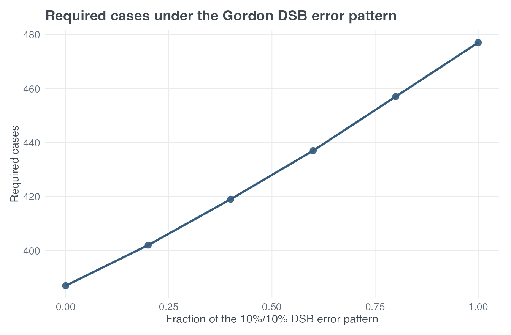
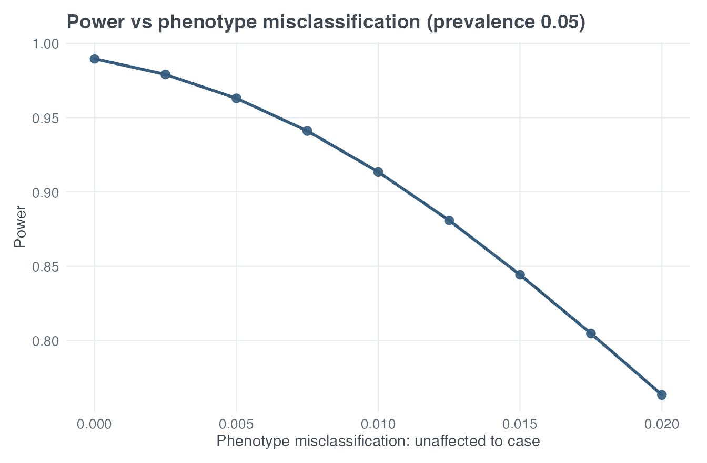
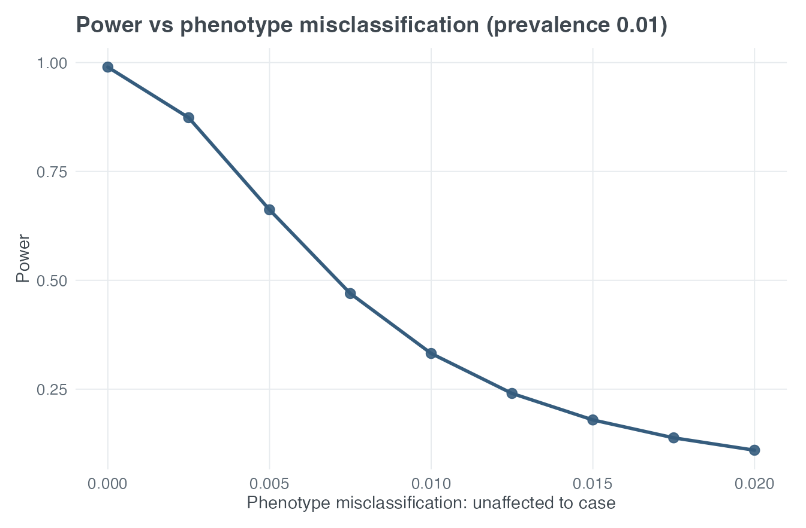
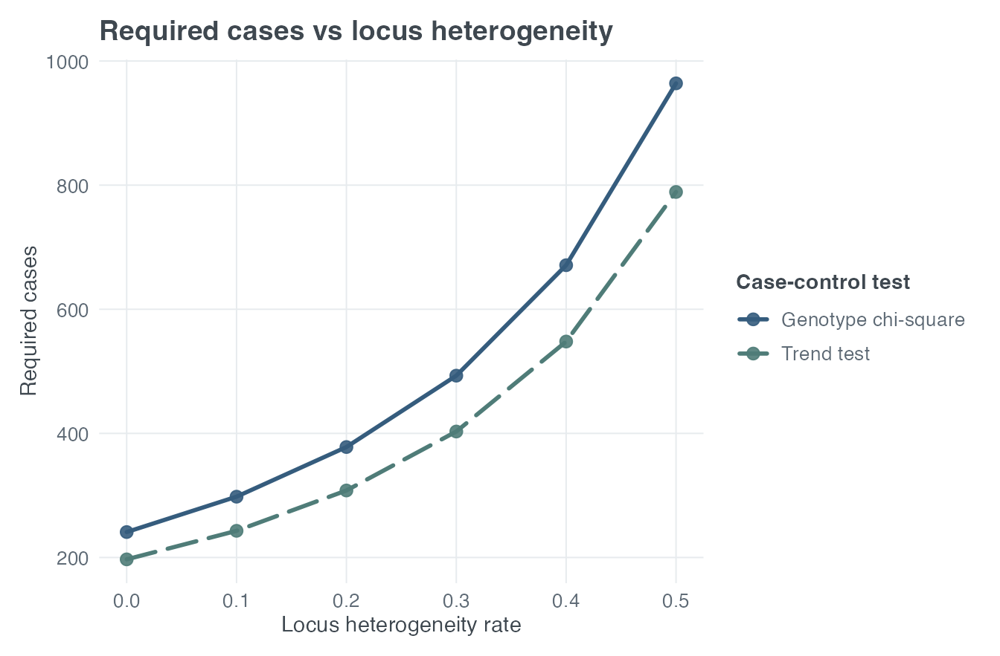

vignettes/paweh-02-case-control-study-design.Rmd
paweh-02-case-control-study-design.RmdA case-control association study asks whether genotype distributions
differ between affected and unaffected groups. paweh
supports the two-degree-of- freedom genotype chi-square test and a
one-degree-of-freedom genotype trend test. The control-to-case ratio
k connects the two sample sizes:
In model-based designs, prevalence, disease-allele frequency,
relative risk, and mode of inheritance determine the conditional
genotype distributions. In model-free designs, the researcher supplies
those distributions directly as g1 (case or affected) and
g0 (control or unaffected).
The unified interfaces are the normal starting point. This model-based example asks for power with 500 cases and an equal number of controls, then solves the inverse problem for 80% power.
basic_cc_power <- cc_power(
N_case = 500, alpha = 0.05,
input_mode = "model_based",
prev = 0.05, pd = 0.30, R2 = 1.8, MOI = "M",
k = 1, verbose = FALSE
)
basic_cc_mssn <- cc_mssn(
power = 0.80, alpha = 0.05,
input_mode = "model_based",
prev = 0.05, pd = 0.30, R2 = 1.8, MOI = "M",
k = 1, verbose = FALSE
)
data.frame(
quantity = c("Genotype-test power", "Required cases", "Required controls", "Required total"),
value = c(
basic_cc_power$tests$genotypes$power,
basic_cc_mssn$tests$genotypes$MSSN_case,
basic_cc_mssn$tests$genotypes$MSSN_ctrl,
basic_cc_mssn$tests$genotypes$MSSN_total
)
)
#> quantity value
#> 1 Genotype-test power 0.8366557
#> 2 Required cases 457.0000000
#> 3 Required controls 457.0000000
#> 4 Required total 914.0000000These are asymptotic operating characteristics under the stated disease model. They do not account for uncertainty in the input parameters.
Gordon et al. studied case-control genotype tests under genotype
misclassification. Their Figure 1b DSB example assumes case allele
frequency 0.40, control allele frequency 0.50, Hardy–Weinberg
equilibrium (HWE), equal numbers of cases and controls, 95% power, and
alpha = 0.05.
Under HWE, allele frequency p gives genotype
probabilities c((1-p)^2, 2*p*(1-p), p^2):
In paweh’s two-parameter error model, Gordon’s DSB
parameters map as e1 = delta and
e2 = epsilon / 2. The division by two reflects equal
allocation of total heterozygote error to the two homozygotes.
gordon_no_error <- cc_mssn(
power = 0.95, alpha = 0.05,
input_mode = "model_free",
g1 = g_gordon_case, g0 = g_gordon_control, k = 1,
geno_misclass = "2p", e1 = 0, e2 = 0,
verbose = FALSE
)
gordon_dsb_10 <- cc_mssn(
power = 0.95, alpha = 0.05,
input_mode = "model_free",
g1 = g_gordon_case, g0 = g_gordon_control, k = 1,
geno_misclass = "2p", e1 = 0.10, e2 = 0.05,
verbose = FALSE
)
data.frame(
DSB_error = c("No error", "delta = epsilon = 0.10"),
published_required_cases = c("approximately 386", "477"),
paweh_required_cases = c(
gordon_no_error$tests$genotypes$MSSN_case,
gordon_dsb_10$tests$genotypes$MSSN_case
)
)
#> DSB_error published_required_cases paweh_required_cases
#> 1 No error approximately 386 387
#> 2 delta = epsilon = 0.10 477 477This is a Published-example reproduction. The error
result is exact at 477 cases. The baseline is near-exact:
paweh returns 387 rather than the paper’s approximately 386
because the underlying continuous MSSN is about 386.08 and
paweh ceilings the number of subjects.
The following sweep keeps the published genotype distributions and
design fixed. A multiplier of one is
delta = epsilon = 0.10; zero is no error.
plot_cc_mssn(
x_var = "geno_error_multiplier",
x_values = seq(0, 1, length.out = 6),
test = "genotypes", input_mode = "model_free",
sample_size = "case",
power = 0.95, alpha = 0.05,
g1 = g_gordon_case, g0 = g_gordon_control, k = 1,
geno_misclass = "2p", e1_base = 0.10, e2_base = 0.05,
x_label = "Fraction of the 10%/10% DSB error pattern",
title = "Required cases under the Gordon DSB error pattern"
)
Required case sample size as the Gordon DSB error pattern increases from no error to delta = epsilon = 0.10.
The curve is a design sensitivity analysis: it treats error rates as fixed scenarios rather than estimating their uncertainty.
Edwards et al. examined phenotype error in a biallelic case-control
design. Their Figure 2 example uses 250 cases, 250 controls,
alpha = 0.01, affected minor-allele frequency 0.05,
unaffected minor-allele frequency 0.15, and HWE.
g_edwards_affected <- c(0.9025, 0.0950, 0.0025)
g_edwards_unaffected <- c(0.7225, 0.2550, 0.0225)
edwards_scenarios <- data.frame(
prev = c(0.05, 0.01, 0.05, 0.01),
theta = 0,
phi = c(0.01, 0.01, 0.02, 0.02),
published_power = c(0.91, 0.33, 0.76, 0.11)
)
edwards_scenarios$paweh_power <- vapply(seq_len(nrow(edwards_scenarios)), function(i) {
cc_power(
N_case = 250, alpha = 0.01, k = 1,
input_mode = "model_free",
g1 = g_edwards_affected, g0 = g_edwards_unaffected,
prev = edwards_scenarios$prev[i],
pheno_misclass = TRUE,
theta = edwards_scenarios$theta[i],
phi = edwards_scenarios$phi[i],
verbose = FALSE
)$tests$genotypes$power
}, numeric(1))
edwards_scenarios
#> prev theta phi published_power paweh_power
#> 1 0.05 0 0.01 0.91 0.9134913
#> 2 0.01 0 0.01 0.33 0.3320457
#> 3 0.05 0 0.02 0.76 0.7633919
#> 4 0.01 0 0.02 0.11 0.1098263This is an excellent Published-example reproduction;
the paper reports rounded powers. Here
theta = Pr(affected -> control) and
phi = Pr(unaffected -> case). For a rare disease, even a
small phi can matter greatly because the unaffected source
population is much larger than the affected source population. The
no-error reference power is about 0.9896.
Both plots use the same underlying genotype distributions. Only prevalence is changed between panels.
plot_cc_power(
x_var = "phi", x_values = edwards_phi,
test = "genotypes", input_mode = "model_free",
N_case = 250, alpha = 0.01, k = 1,
g1 = g_edwards_affected, g0 = g_edwards_unaffected,
prev = 0.05, pheno_misclass = TRUE, theta = 0,
title = "Power vs phenotype misclassification (prevalence 0.05)"
)
Power as unaffected subjects are increasingly classified as cases, with prevalence 0.05.
plot_cc_power(
x_var = "phi", x_values = edwards_phi,
test = "genotypes", input_mode = "model_free",
N_case = 250, alpha = 0.01, k = 1,
g1 = g_edwards_affected, g0 = g_edwards_unaffected,
prev = 0.01, pheno_misclass = TRUE, theta = 0,
title = "Power vs phenotype misclassification (prevalence 0.01)"
)
The same sensitivity analysis with prevalence 0.01.
For case-control calculations, pi is the fraction of
cases attributable to the modeled locus; 1 - pi is the
heterogeneous fraction. The model-free example below compares genotype
and trend-test MSSN as heterogeneity grows.
plot_cc_mssn(
x_var = "locus_het_rate",
x_values = seq(0, 0.50, by = 0.10),
input_mode = "model_free", compare_tests = TRUE,
sample_size = "case",
power = 0.80, alpha = 0.05, k = 1,
g1 = g_gordon_case, g0 = g_gordon_control,
title = "Required cases vs locus heterogeneity"
)
Required cases for genotype and trend tests as the heterogeneous fraction increases.
Ahn et al. (2007) provide Published methodological context for how SNP genotyping errors affect Cochran–Armitage trend-test designs. The plot above does not claim to reproduce their specific Taylor-series error framework.
Moskvina et al. (2006) showed that different error mechanisms in cases and controls can substantially inflate Type I error, even when absolute error rates are small. The following calculation is therefore context, not a calibrated false-positive analysis.
diff_error_design <- cc_power(
N_case = 500, alpha = 0.05, k = 1,
input_mode = "model_free",
g1 = g_gordon_case, g0 = g_gordon_control,
geno_misclass = "diff3p",
case_e01 = 0.02, case_e02 = 0.01, case_e03 = 0.005,
ctrl_e01 = 0.01, ctrl_e02 = 0.005, ctrl_e03 = 0.002,
verbose = FALSE
)
diff_error_design$tests$genotypes$power
#> [1] 0.9794989Important: paweh returns nominal
asymptotic power or MSSN under differential genotype error using the
usual chi-square critical value. It does not independently recalibrate
an arbitrary differential-error null distribution. These nominal
operating characteristics must not be interpreted as protection against
the Type I error inflation described by Moskvina et al.
The unified interface accepts several modifiers in one call and reports each as a separate sensitivity scenario from the same no-error baseline. It does not combine the modifier transformations.
scenario_cc <- cc_mssn(
power = 0.80, alpha = 0.05, k = 1,
input_mode = "model_free",
g1 = g_gordon_case, g0 = g_gordon_control,
locus_het = TRUE, pi = 0.80,
prev = 0.05, pheno_misclass = TRUE, theta = 0.02, phi = 0.01,
geno_misclass = "2p", e1 = 0.02, e2 = 0.01,
verbose = FALSE
)
lapply(scenario_cc$scenarios, function(scenario) {
c(
genotype_cases = scenario$tests$genotypes$MSSN_case,
trend_cases = scenario$tests$trend$MSSN_case
)
})
#> $no_error
#> genotype_cases trend_cases
#> 241 197
#>
#> $phenotype_misclassification
#> genotype_cases trend_cases
#> 345 282
#>
#> $heterogeneity
#> genotype_cases trend_cases
#> 378 308
#>
#> $genotype_misclassification
#> genotype_cases trend_cases
#> 251 205Use cc_power() and cc_mssn() for most
designs, particularly when switching between model-based and model-free
inputs or comparing modifier scenarios. Specialized genotype-only
functions remain available in the reference manual for focused
calculations.
Interpretation depends on assumptions close to each calculation:
theta and phi describe opposite
phenotype-error directions.pi is the homogeneous fraction; 1 - pi is
heterogeneous.Ahn K, Haynes C, Kim W, St Fleur R, Gordon D, Finch SJ. The effects of SNP genotyping errors on the power of the Cochran-Armitage linear trend test for case/control association studies. Annals of Human Genetics. 2007;71(Pt 2):249–261. https://doi.org/10.1111/j.1469-1809.2006.00318.x.
Edwards BJ, Haynes C, Levenstien MA, Finch SJ, Gordon D. Power and sample size calculations in the presence of phenotype errors for case/control genetic association studies. BMC Genetics. 2005;6:18. https://doi.org/10.1186/1471-2156-6-18.
Gordon D, Finch SJ, Nothnagel M, Ott J. Power and sample size calculations for case-control genetic association tests when errors are present: application to single nucleotide polymorphisms. Human Heredity. 2002;54(1):22–33. https://doi.org/10.1159/000066696.
Moskvina V, Craddock N, Holmans P, Owen MJ, O’Donovan MC. Effects of differential genotyping error rate on the type I error probability of case-control studies. Human Heredity. 2006;61(1):55–64. https://doi.org/10.1159/000092553.
sessionInfo()
#> R version 4.6.1 (2026-06-24)
#> Platform: aarch64-apple-darwin23
#> Running under: macOS Tahoe 26.6.2
#>
#> Matrix products: default
#> BLAS: /Library/Frameworks/R.framework/Versions/4.6/Resources/lib/libRblas.0.dylib
#> LAPACK: /Library/Frameworks/R.framework/Versions/4.6/Resources/lib/libRlapack.dylib; LAPACK version 3.12.1
#>
#> locale:
#> [1] C.UTF-8/C.UTF-8/C.UTF-8/C/C.UTF-8/C.UTF-8
#>
#> time zone: America/New_York
#> tzcode source: internal
#>
#> attached base packages:
#> [1] stats graphics grDevices utils datasets methods base
#>
#> other attached packages:
#> [1] paweh_0.99.0 BiocStyle_2.40.0
#>
#> loaded via a namespace (and not attached):
#> [1] gtable_0.3.6 jsonlite_2.0.0 dplyr_1.2.1
#> [4] compiler_4.6.1 BiocManager_1.30.27 tidyselect_1.2.1
#> [7] dichromat_2.0-1 jquerylib_0.1.4 systemfonts_1.3.2
#> [10] scales_1.4.0 textshaping_1.0.5 yaml_2.3.12
#> [13] fastmap_1.2.0 ggplot2_4.0.3 R6_2.6.1
#> [16] labeling_0.4.3 generics_0.1.4 knitr_1.51
#> [19] htmlwidgets_1.6.4 tibble_3.3.1 bookdown_0.47
#> [22] desc_1.4.3 bslib_0.12.0 pillar_1.11.1
#> [25] RColorBrewer_1.1-3 rlang_1.3.0 cachem_1.1.0
#> [28] xfun_0.60 fs_2.1.0 sass_0.4.10
#> [31] S7_0.2.2 otel_0.2.0 cli_3.6.6
#> [34] withr_3.0.3 pkgdown_2.2.1 magrittr_2.0.5
#> [37] digest_0.6.39 grid_4.6.1 mvtnorm_1.4-2
#> [40] lifecycle_1.0.5 vctrs_0.7.3 evaluate_1.0.5
#> [43] glue_1.8.1 farver_2.1.2 ragg_1.5.2
#> [46] rmarkdown_2.31 pkgconfig_2.0.3 tools_4.6.1
#> [49] htmltools_0.5.9